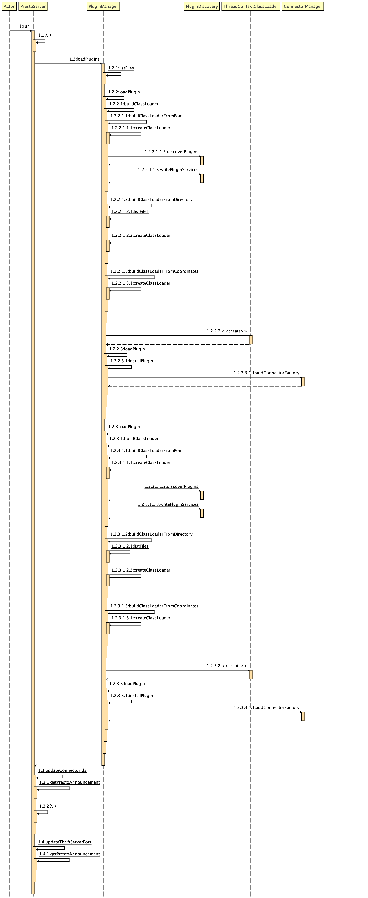
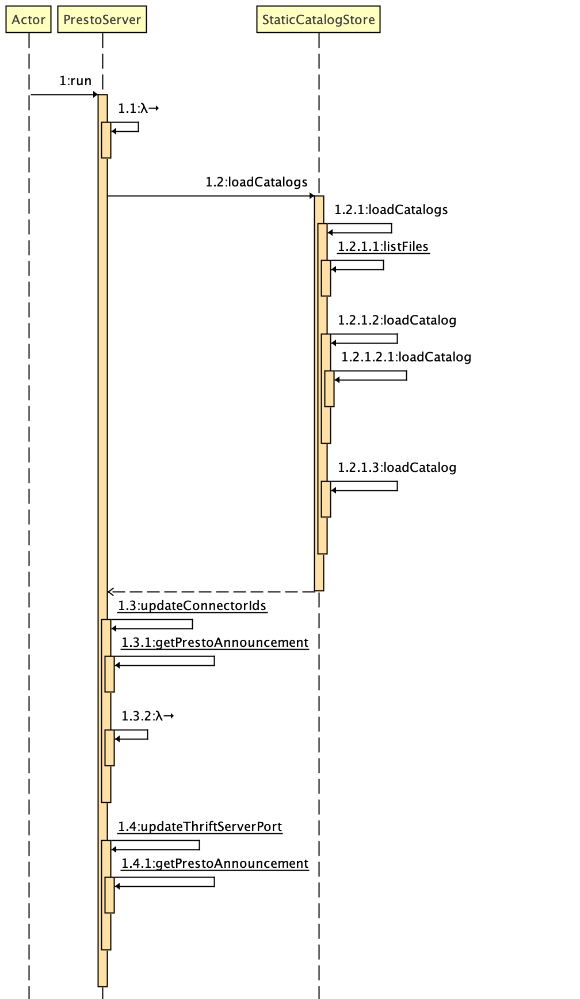
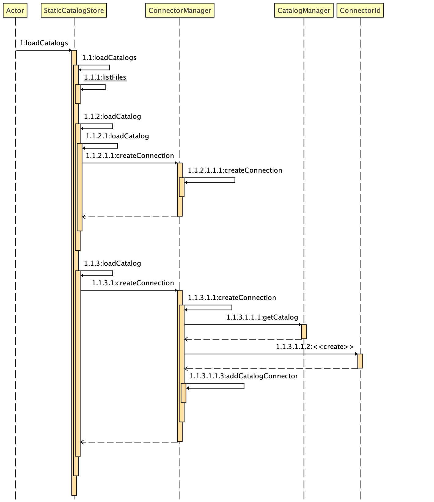

本文总结下 Presto Connectors 的 SPI 实现。在 Presto 中，UDF、EventListener、DataTypes、ParameterTypes、Access Control、Resource Group 以及 Connector
都是通过插件机制实现的。
定义插件
Presto 将支持的所有插件类型封装在顶层接口 Plugin 中：

Presto 将所有支持的插件类型，都统一封装在一个统一的接口中：
1 | public interface Plugin{ |
加载插件
插件加载时序图：

1 |
|
1 | final class PluginDiscovery { |
加载 Catalogs
Catalog -> Schema -> Table ，ConnectorFactory 可能存放多个 catalog 实例，例如每一个 mysql 实例都是一个 catalog 。
加载 Catalogs 时序图：
PrestoServer.run()调用StaticCatalogStore.loadCatalogs()

StaticCatalogStore.loadCatalogs()的具体调用

1 | public class StaticCatalogStore { |
1 |
|
IcebergConnectorFactory
下面以 iceberg 为例，看下如何实现一个 ConnectorFactory 。
实现一个 ConnectorFactory ，需要实现 getName()、getHandleResolver()、create() 3个方法：
1 | public class IcebergConnectorFactory implements ConnectorFactory { |
1 | /** |
1 | /** |